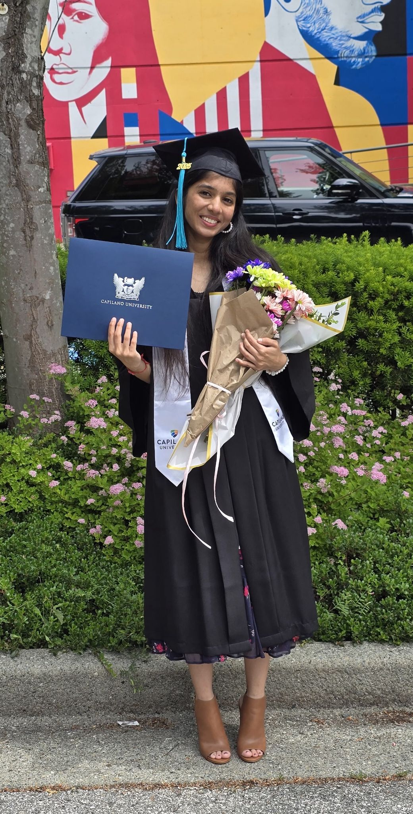

Biology graduate with comprehensive academic laboratory training across biological and chemical sciences. Committed to precision, scientific rigour, and quality-driven processes — seeking laboratory opportunities in life sciences and healthcare.
Let's Connect
I am a Biology graduate with an Associate of Science degree from Capilano University, equipped with comprehensive academic laboratory training across biological and chemical sciences.
My experience in university laboratory environments has strengthened my ability to work with precision, follow structured protocols, and maintain a high standard of accuracy in experimental procedures. Through hands-on laboratory work, I have developed strong analytical thinking, careful observation skills, and a disciplined approach to scientific documentation.
I am comfortable working in controlled laboratory settings where attention to detail, organization, and adherence to safety and quality practices are essential for producing reliable and reproducible results. I am particularly motivated to pursue laboratory opportunities that emphasize methodical analysis, technical skill development, and quality-driven scientific processes — and I am committed to contributing positively to collaborative laboratory environments.
Open to opportunities in life sciences, healthcare & pharmaceutical sectors.